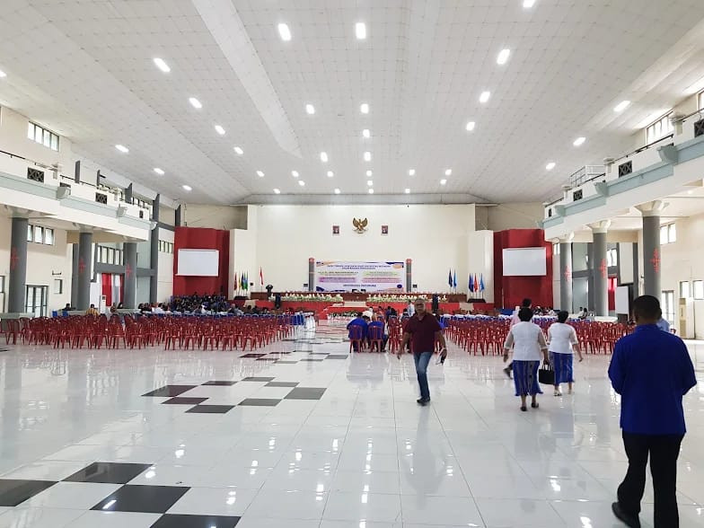

Surat Keterangan Aktif Kuliah
Penerbitan surat keterangan resmi terdaftar sebagai mahasiswa aktif untuk keperluan beasiswa, BPJS, atau tunjangan orang tua.
Platform digital resmi sistem administrasi dokumen dan layanan kemahasiswaan Universitas Pattimura. Silakan masuk ke dalam portal untuk mulai memilih layanan atau mengajukan permohonan.
Pilih jenis layanan dokumen akademik yang Anda butuhkan di tingkat Universitas Pattimura.
Penerbitan surat keterangan resmi terdaftar sebagai mahasiswa aktif untuk keperluan beasiswa, BPJS, atau tunjangan orang tua.
Cetak dan pengesahan rekapitulasi nilai kumulatif mahasiswa resmi bertanda tangan digital Wakil Rektor Bidang Akademik.
Pengajuan penundaan kegiatan akademik semester sementara untuk mahasiswa sesuai ketentuan Peraturan Akademik UNPATTI.
Layanan pengesahan fotokopi ijazah dan transkrip akademik bagi alumni Universitas Pattimura secara online & offline.
Lengkapi data diri dan rincian permohonan di bawah ini dengan benar.
Sarana pendukung kegiatan pembelajaran dan administrasi mahasiswa di Kampus Poka Ambon.
Pusat tata kelola birokrasi, rektorat, serta administrasi tingkat pusat Universitas Pattimura.

Gedung wisuda universitas, kegiatan seni budaya, dan sekretariat organisasi kemahasiswaan.